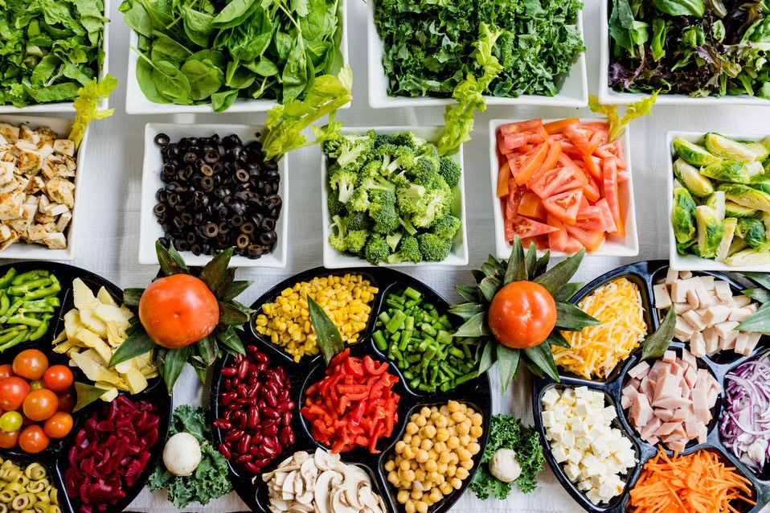

-
The Eiffel tower! The view is great

-
The Amazing Louvre Museum

-
The French cuisine will always be my favorite

"The city of lights, the city of romance," "the culinary capital of the world," this is what Paris is known for. Over seven million people visit each year.Paris, is one of the most amazing places you will ever visit. There are so many phenomenal things to see and do. You will never get bored!
The most prominent landmark in Paris is the Eiffel Tower. More than seven million people visit the Eiffel Tower each year. For a small fee you can ride the elevator to the top. The view from the top is spectacular. If you want some exercise you can take the stairs that go from the ground to the second platform. Many people like to go to the Eiffel Tower at night because it comes alive with millions of twinkling lights. At night when lit, it is an attractive golden color. The Eiffel Tower took two years to build; it was finished on March 31, 1889. The Eiffel Tower was originally built for the world exhibition in 1889, but today it is used as a radio transmission tower and a tourist attraction. The Eiffel Tower is named after Gustave Eiffel, the main contractor and architect.
Paris has many museums and Art galleries some of the well known ones are the Louvre, Musee de L'Air et de L'espace and the Musee de L'Orangerie. The Louvre was originally a royal palace but became a museum in 1793. Outside the museum is a substantial glass pyramid. Inside there are many exhibits including artifacts from Egypt, Greece, and Rome. Paris is the culinary capital of the world and is known worldwide for its gourmet cuisine. Some of the best places to eat in Paris include Le Cinq, Taillevent, Restruant Pierre Gagnaire, and L’Astrance. Le Cinq serves classic and contemporary dishes. Restruant Pierre Gagnaire is famous for their innovative dishes that will please both your eyes and your taste buds. L’Astrance is well known in the culinary world for their surprise menu. Once you've tasted the French cuisine you will never get enough of it. I chose to tell you about Paris because it's of the most beautiful cities in the world to visit.
Every trip to the capital deserves a visit to the Louvre, to discover the wealth of treasures it contains.The Louvre is the world's largest art museum and considered a historic monument in Paris. A central landmark of the city, it is located on the Right Bank of the Seine in the city's 1st arrondissement. If you only have time to visit one museum in Paris, it should undoubtedly be the Louvre.
Born and raised in France, a lifetime of travel has only made me yearn for the food of my early years. For me, French cooking is as much about comfort as it is about sophistication and quality. Always striving for authenticity, or to capture a rarely demonstrated culinary technique…I continue to curate my favourite French food for you. Bon appetit!
Although its luxury shops, nightlife, casinos, and high-end restaurants give Cannes a feeling of exclusivity, this classic French Riviera city has alternatives to suit every budget. Located in the Alpes-Maritimes department, Cannes is home to an immense marina with yachts and superyachts for the rich and famous. Stroll, shop, eat in one of the little restaurants, or just mingle with the locals. Plan your visit to Cannes!
Paris is one of the finest cities in the world for shopping. I've put together a list of all of my favorite streets and stores that you won't want to miss during your visit.
It's the most wonderful time of the year! With the kids jingle-belling And everyone telling you Be of good cheer Disney will make your time in paris wonderful!
Does it get any more romantic than a boat cruise down the Seine? Taking in the sights and drinking champagne? Pro tip: You can get incredible Eiffel Tower photos from the river.
There is a lot to explore in Paris, with this website my goal is to make you fall in love with this great city as much as I have. Below are a collection of pictures to show off the beauty of Paris!
Time to Shop..
Yummy,Yummy
Romantic Moments in Paris
Hot Summer
Fields of Lavender
View from Above!